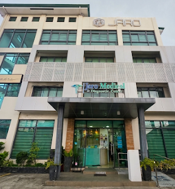
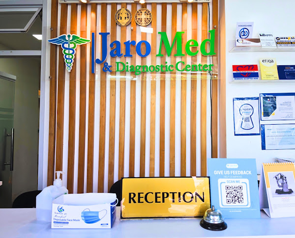
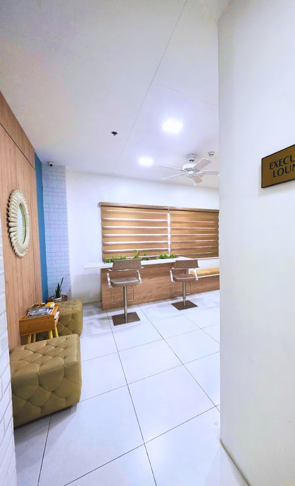
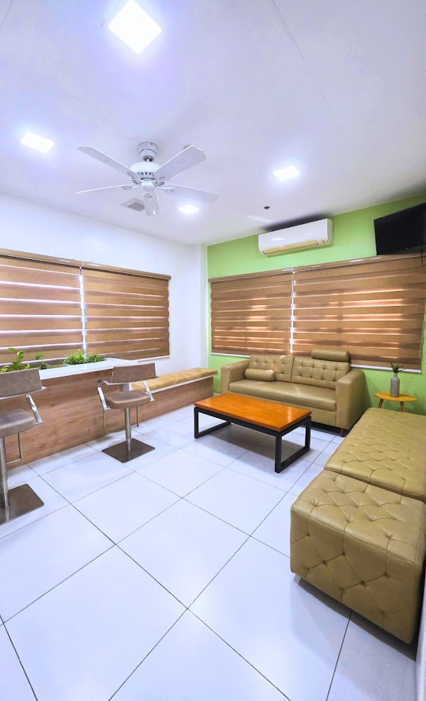

Dedicated to Precision Healthcare
JaroMed & Diagnostic Center delivers trusted primary care, digital imaging, and comprehensive clinical laboratory services in Dasmariñas, Cavite.

Our Founding Story
JaroMed & Diagnostic Center was established with a singular mission: to bridge the gap between high-precision clinical diagnostics and compassionate, community-focused patient care in Dasmariñas, Cavite. Recognized for long queues and delayed laboratory turnarounds in regional facilities, our founders set out to build an accessible, modern clinic environment where medical technology and patient comfort coexist seamlessly.
Starting as an outpatient diagnostic testing center, JaroMed grew rapidly by integrating state-of-the-art laboratory analyzers, digital electrocardiograms, and low-dose X-ray technology. Today, JaroMed serves thousands of patients annually across Cavite—ranging from routine pre-employment physical exams and corporate wellness screenings to outpatient specialty consultations and accredited HMO coverage.
Our Core Commitments
Diagnostic Accuracy
Every blood panel, digital radiograph, and cardiac tracer is subjected to rigorous quality controls and interpreted by certified medical technologists and specialists.
Rapid Turnaround
We prioritize fast, accurate result processing—delivering digital medical reports directly through our patient portal to streamline clinical decision-making.
Accessible Healthcare
Partnering with major HMO providers and insurance institutions ensures cashless transactions, transparent pricing, and accessible healthcare for all families in Cavite.
Advanced Laboratory Equipment
Equipped with automated clinical chemistry, hematology, and immunology systems to deliver dependable metabolic panels and hormone testing.
Patient-Centered Staff
Our licensed medical staff, radiologic technologists, and primary care physicians provide gentle, attentive care during every diagnostic visit.
Modern Executive Facilities
Designed with air-conditioned waiting lounges, private consultation rooms, and comfortable extraction stations to ensure a stress-free environment.
Inside Our Center



Schedule a Visit or Test
Book your diagnostic panel or request a consultation online today.
Request Consultation